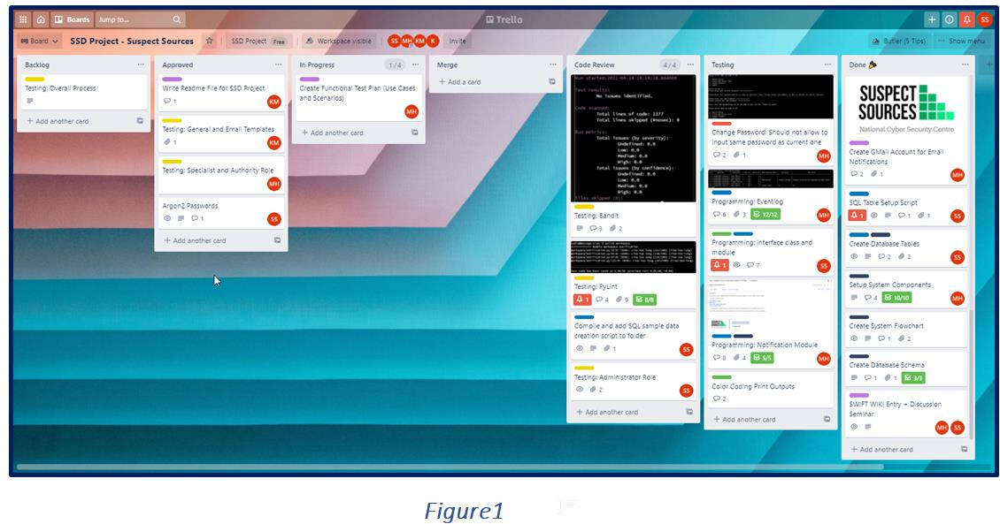

Secure Software Development (SSD)
Key Study Objectives
- Developing an understanding of the concept of abstraction in programming and the basic principles of secure development methodologies.
- Positioning myself and my team as IT Software Consultants and Developers to develop an application with domain-specific requirements that meets the design brief, while ensuring that all privacy and security regulations are met.
- Outline business and technical challenges expect to encounter based on build-up rationales relates to software architecture principles, SDLC models (TOGAF and Agile), and testing required for software development.
- No segregation of roles in the testing phase and the developer spent too long looking at their code, which might have resulted in 'code blindness' leading to a situation where the errors and weak points were unable to be identified.
- Overcomplicated system design due to the fact of trying to include all nice-to-have system requirements with limited resources.
- The lack of training and expertise (due to inexpensive hires with fewer competencies) within the team led to;
- Not understanding the importance of code review, which aid in finding bugs, enforcing a common code style, while improving the quality of the codebase.
- Further, no code review process limited the ability to increase team quality through knowledge sharing and curtailed the team’s capability to respond to emergent tasks.
- No documentation process for the codebase, causing code readability and reusability issues.
- Project execution without a formal process and standard practice led to an ad hoc development approach, causing disastrous outputs with overcomplicated design, inaccurate risk assessment, insufficient testing, and subjective progress assessment. This resulted in time wastage; squander productivity and demoralised developers leaving the company.
- Further, the lack of coding standards harmed the query performances causing issues in server performances. As an Infrastructure specialist, I spent most times restarting the servers and ended up expanding the hardware capacity thinking it was an issue in the infrastructure. Now, I understand what went wrong, and can see it as a spiral effect of lack of coding standards.
Business-focus vs Secure-focus Software Development: Anyone in tech says that security is a paramount concern. And yet, I experienced circumstances, where the top management did not see the criticality of creating a shared responsibility with the in-house software development team for delivering a secure and high performance-based system.
Not being the core business operation, the stakeholders did not have a full understanding of the business risk of using a fragile system with broken aspects of confidentiality, integrity, or availability. Therefore, enough effort had not been exerted for supporting sufficient resources to manage the SDLC.
This negatively impacted on making security and performances as first-class-citizens, due to underlining reasons;
Based on my learning, if I think aloud, I could also realise IT management issues regard to not escalating concerns over limited resources and expertise. I see the issue because of a political dilemma of aligning with the business stakeholders/top management who were focused on core business operations.
Although earlier researches discussed the management issues of software development, real-world drama around the political dilemma in striking the balance between Business-focus vs Secure-focus Software Development has not been an investigative discussion point in academic research.
GDPR and overlap of jurisdiction: I realised points as to why careful consideration need to ensure that correct policies and procedures are in place to avoid any conflicts with legislation during the implementation of data privacy in software development.
Right to information and right to privacy intend to help the individual making all types of organisations accountable; however, uncertainty regarding the relationship between the GDPR and other laws causes conflict between determining the applicability of the legislation on the data subject (Thompson, 2017).
Organisations must take steps to implement all relevant regulations, where they can and mitigate risks where they are unable. For example, compare GDPR with other legislation and create a matrix of the organisational responsibilities under these laws (i.e. Data Act in Dutch Police – Wpg).
As GDPR affects international businesses offering services to EU markets or employing EU workers (Kruger, 2020); the lack of clarity between the GDPR and other international laws presents a dilemma. Inevitable litigation issues and conflicts associated with complying with cross-border data protection laws threaten exports of data-based services from developing countries and question the applicability of each legislation.
Such circumstances demand mechanisms to limit conflicts through an application of a one-size-fits-all policy for data protection.
Unearthing performances through familiarity and unfamiliarity:The experiences we gained during the last team project as members have paid during our current projects as familiarity helps to increase the likelihood of integrating knowledge at ease to come with coherent solutions.
However, prior knowledge of learning who has what information could bring positive contributions only if you do not have members who are constantly at odds with one another.
It might be that familiarity benefit trumped by the fresh perspectives that come from adding new faces to the team, which also limits the unfortunate event of being with members who have drastically different personalities and philosophies, which can lead to infighting.
Indeed, taking advantage of both known and fresh perspectives, we have decided to have rotational leadership during our meetings, and it offers each of us a chance to practice the handling of expressiveness, assertiveness, and flexibility.
Regarding project management in the coding section, we have used Trello as a tool to ensure all tasks were allocated without losing any details. The task allocation was based on the competencies of each member as well as their willingness to work hard to achieve the project goals. During our regular meetings, the tool was used to track our progress and to decide the next action to be taken. Figure 1 explains how we worked on the tool.

Reference List:
Ahmad, M (2010) Management issues in software development. Available from:https://www.researchgate.net/publication/234778069_Management_issues_in_software_development [Accessed 25 March 2021].
Kruger, T. (2020) The Data Protection Conflict: The EU General Data Protection Regulation 2016 and India’s Personal Data Protection Bill 2019. Available from:https://conflictoflaws.net/2020/the-data-protection-conflict-the-eu-general-data-protection-regulation-2016-and-indias-personal-data-protection-bill-2019/ [Accessed 25 March 2021].
Mattoo, A. & Meltzer, J. (May 23, 2018) Resolving the conflict between privacy and digital trade. Voxeu. Available from:https://voxeu.org/article/resolving-conflict-between-privacy-and-digital-trade [Accessed 26 March 2021].
Politie (2019) Privacy Statement. Available from https://www.politie.nl/algemeen/privacy.html?sid=228463d3-72e3-4434-8947-933a8e3d3756 [Accessed 20 March 2021].
Thompson, B. (November 16, 2017) GDPR: Crackdowns and conflict on personal privacy. Financial Times. Available from: https://www.ft.com/content/8e502b6e-794d-11e7-a3e8-60495fe6ca71 [Accessed 1 April 2021].
Discussion Topic 01: Insecure Deserialization
Transferring data for storing, communication, and logging has been a key feature of many web applications in the current environment.
What is Serialization & Deserialization?
To facilitate persistence; Inter-process/remote communication (IPC/RPC) ; the ease of share and storage of data with reduced data’s disk space and bandwidth requirements, the data serialization process is being used (Davosnetworks, n.d.). Serialization follows the process of transforming an already structured data format into a stream of bytes (ascii characters) that can be restored later.The opposite process of recovering the data’s original structure from a stream of bytes is called deserialization.
What is Insecure Deserialization and its Impact?
Insecure deserialization occurs when an attacker modifies application logic or execute arbitrary commands or code (ACE), which results in maliciousness or changes in data during or after deserialization. When applications and APIs deserialize hostile or tampered objects supplied by an attacker, they become vulnerable leading to deserialization flaws related remote code execution attacks (RCE), which in turn damages the data confidentiality (Khunphet, 2019; OWASP, 2017).

A: Attacker simulates serialized data similar to original data.
B: Application accepts attacker’s data.
C: Attacker gain access to remote code execution attacks damaging data confidentiality.
Ways to avoid Insecure Deserialization
The most reliable option is not to trust serialize objects from an untrusted source (OWASP, 2017; Yadav, 2018).
- Consider one of more of the following to prevent insecure deserialization, when above it not possible:
- Implement digital signatures on any serialized objects as integrity checks.
- Use a Web Application Firewall.
- Use of low privilege environments to isolate serialization/deserialization process.
- Monitor deserialization exceptions and failures.
Reference list
Davosnetworks (n.d.) Insecure Deserialization #8 – OWASP Top 10 Vulnerabilities 2020. Available from: https://www.davosnetworks.com/insecure-deserialization-owasp-top-10-vulnerabilities-2020 Accessed 18 March 2020].
Matthew (2021) OWASP Top 10 Cheat Sheet. Available from: https://blog.sqreen.com/owasp-top-10-cheat-sheet-startup-ctos/ [Accessed 18 March 2020].
Khunphet, P. (2019) Insecure Deserialization. Available from: https://medium.com/blog-blog/insecure-deserialization-e5398e83defe [Accessed 18 March 2020].
OWASP (2017) OWASP Top 10 – 2017 The Ten Most Critical Web Application Security Risks. Available from: https://owasp.org/www-pdf-archive/OWASP_Top_10-2017_%28en%29.pdf.pdf [Accessed 18 March 2020].
Vojtko, M. (2020) Keep Your Site Safe with the OWASP Top 10 List. Available from: https://www.thesslstore.com/blog/keep-your-site-safe-with-the-owasp-top-10-list/ [Accessed 18 March 2020].
Yadav, R. (2018) Advances in Cyber Security. International Journal of Engineering Research & Technology 7(3): 117-120. Available from: https://www.ijert.org/research/advances-in-cyber-security-IJERTV7IS030091.pdf [Accessed 18 March 2020].
Group 02 – Team members (Kalina, Keir, Marzio, Sebastian)
Team Assignment Topic:
For this assessment, you are advised to position yourself and your team as IT Software Consultants and Developers.You are required to develop an application for an organisation with domain-specific requirements. A domain refers to a group of users with similar application and hardware requirements. A domain may be characterised by having:
Such requirements place specific demands on a system’s operations, and this influences the way that it should be operated and managed. Domains which you should consider for the purpose of this assignment include:
You can read more about the computer requirements of these systems using the references given. You should choose a single domain to focus your development on, and your system should be tailored to the requirements of this domain. In all domains, a user will need to be able to upload, download and share data. The agreed criteria for successful development are:
- The solution should ensure that all privacy and security regulations are met, including those specified by the General Data Protection Regulation (GDPR) (ICO, n.d.)
- Mechanisms should be deployed to minimise the attack surface of the solution.
- The organisation would like to see a monolithic version of the application because they have concerns about scalability – and they may wish to extend use to partner organisations on a worldwide basis.
Development conditions: Open-source libraries must be used in your development to ensure that the code may be run for its assessment.
Part one: Create a comprehensive design proposal report, describing your approach to the problem, how you will meet the requirements and the design and implementation of the solution.
Part two: You should create a working prototype of your design based on a monolithic approach.
Part 1: The Design Proposal Report
Your team is expected to prepare and deliver a design proposal report of your intended information risk management work for the organisation.
Your report should detail the design decisions and approaches that you have adopted to create your secure software solution. It should outline business and technical challenges you have identified/ expect to encounter, and then highlight (briefly) what paradigms, patterns, theories and practices you intend to utilise on this project. Build up a rationale where appropriate supported by literature.
State any requirements you have gathered, and any assumptions you are making in relation to the design of the system as a consequence of your investigation. You should also state any tools and models that you will use in your solution.
Checklist for the assignment:
- High level system design (preferably in diagrammatic form e.g., UML) that provides an overview of the solution proposed.
- List of technical challenges to be addressed.
- List of patterns and approaches to address the challenges, supported by references where appropriate (e.g., three tier architecture, client-server architecture, etc.)
- List of system requirements.
- List of assumptions (with brief justifications)
- List of tools and libraries (e.g., syntax checkers, editors, compilers, libraries that provide. additional functionality such as Regex parsers, Cryptographic routines, etc.)
As a team, we decided to commence with the “suspect sources” system for the Dutch NCSC.
View Proposed System: "Suspect sources system for the Dutch NCSC"
View SSD project design document: "Suspect sources system for the Dutch NCSC"
Part 2: Prototype System based on Monolithic Paradigm.
Checklist for the assignment:
File Submission
- The source code and applicable documentation (comments explaining the code, as well as a README file containing a description of the solution implemented and instructions on how to execute the code).
- Output from testing tools and suites.
- Regular demonstrations of code and executables, as well as testing, and demonstrating development over the lifetime of the module (these may happen in the seminar sessions or in one-to-one sessions with your tutor).
- Ensure that your system considers the functionality that similar applications provide, such as user registration, user roles, and CRUD functionality: which should you include? You will need to explain your reasoning and justifications for any omissions during your demonstrations.
Practical Aspect
View ReadMe File: "Suspect sources system for the Dutch NCSC"
View Functional Test Plan: "Suspect sources system for the Dutch NCSC"
View Python Code: "Suspect sources system for the Dutch NCSC"
View GitHub repository : "Suspect sources system for the Dutch NCSC"
Tutor Feedback Comments:
Design Document
A good report, well thought out and well supported by references and diagrams. As a development point consider adding both design patterns as well as anti-patterns to avoid – it can make development easier. Also, good attention to punctuation, defining abbreviations and referencing.
The domain-specific requirements are presented before the group tells the reader what they are proposing to do. I would like to see a section on the proposed solution before domain-specific requirements are discussed. At the end of this section, a reference has been included to Hillenius (2013); it is not clear what exactly this source is supporting.
- I like that this group has given attention to the assignment of user roles.
- Figures numbered and labelled - effective attention to detail and presentation.
- A detailed sequence diagram is presented. It would be natural to assume that a class diagram would be presented before the sequence diagram, as it is the class/object information that is used to create the class diagram.
I like that the authors present the challenges with the design and development of the system after discussing the system design. I would like to see the solutions section presented before the proposed design, as it might be expected that this information will influence the way in which the system is being designed.
Good reference list.
Coding Output
Knowledge and Understanding:
A very good assignment – well programmed and demonstrates a good understanding of the concepts of Python and security – well done!
Application of knowledge:
The application demonstrates that not only did you understand the concepts – but also HOW to implement them in Python – well done
Structure & Presentation:
You met all the requirements, created a comprehensive app and carried out testing – with a ‘negative event’ in the middle of your assignment. The only constructive critique I have is that you should have included more of the discussions in your code rather than a separate doc.
Criticality:
Good peer feedback – I appreciate you had a ‘disruptive event’ right in the middle of your development – well done for being able to pick up, reschedule and deliver a very good app
Graded by:Doug Millward
Graded on:Monday, 26 April 2021

Python Vs. Swift
Python is the best programming language for the 21st Century. Discuss this from a perspective of security, ease of use, maintainability, and functions and features. Compare the suitability of Python in relation to the strengths and weaknesses of the Rust, Swift and F#.
Swift vs. Python comparison:
Launched in 2014, Swift is a relatively new programming language created mainly for Apple ecosystems to replace Objective-C.
Just like Python, Swift is a free, open-source tool. As a primary feature, Swift is faster and more efficient than Python. In the case of fast execution speed requirements in applications such as gaming apps, Swift is the right choice compared to Python. However, as a jack-of-all-trades tool, Python is much more popular and useful for complex data analysis tasks and writing simple scripts.
Swift Automatic Reference Counting (ARC) prevents memory leaks in terms of memory management, which help to optimise the performance. On the contrary, high memory consumption in Python makes it unsuitable for intensive memory tasks.
Swift's syntax is clear and makes it easier to documents as it follows one of Apple's key design philosophy: minimalism. As a narrowly focused tool, Swift is predominantly used for developing iOS mobile and desktop applications. However, lately, Swift has occupied more developers' attention as it has become available on Linux. Furthermore, IBM engineers have introduced Swift Sandbox, which allows Swift to be combined with other backend tools for cloud deployment.
Ultimately, the choice of the best language can differ based on purposes and situations, and it is essential to choose the language based on the developmental needs.
- Group 2
References:
Apple Inc.(2021) Automatic Reference Counting. Available from: https://docs.swift.org/swift-book/LanguageGuide/AutomaticReferenceCounting.html [Accessed 13 April 2021].
Ma-no web design and development (04 March, 2021) Python or Swift: Revealing Benefits and Drawbacks of Each Language and Their Differences. Available from: https://www.ma-no.org/en/programming/python-or-swift-revealing-benefits-and-drawbacks-of-each-language-and-their-differences [Accessed 13 April 2021].
Zheng, D., Lattner, Zachgrayio, Texasmichelle, Rxwei & Brettkoonce(1 December, 2020) Why Swift for TensorFlow. Available from: https://github.com/BradLarson/swift/blob/main/docs/WhySwiftForTensorFlow.md [Accessed 13 April 2021].